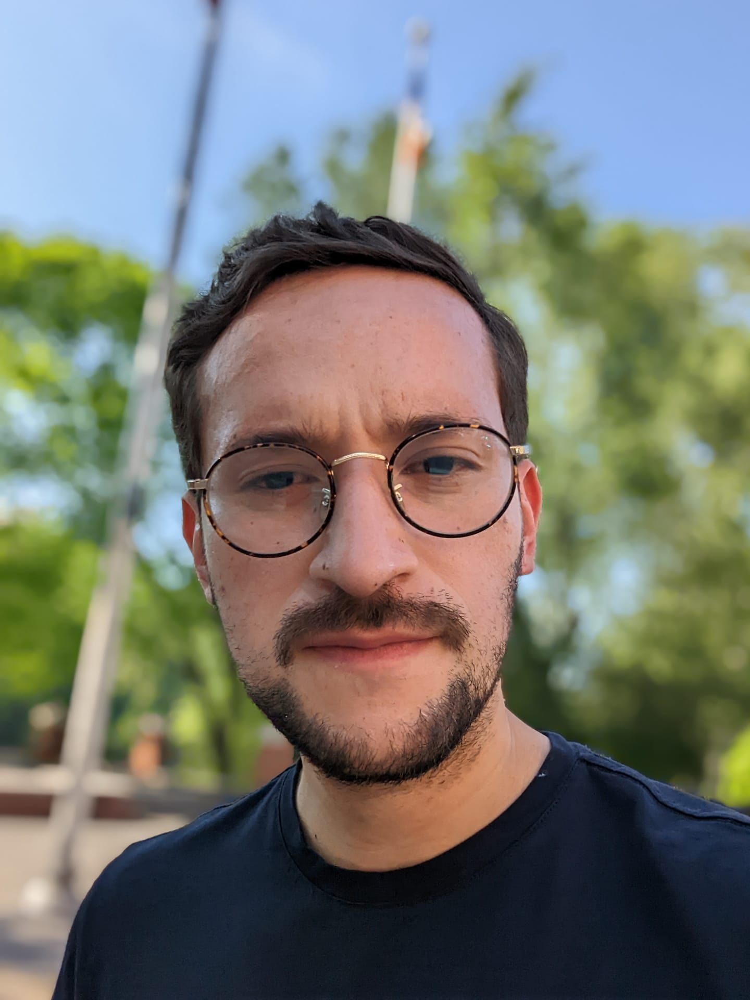

I am a third year Finance PhD student at NYU Stern. My primary research interests span the areas of financial intermediation and international macroeconomics. I have participated in the Global Capital Allocation Project since July 2021. I grew up in Bogotá (Colombia) and I am currently living in New York.
"There is no history of mankind, there is only an indefinite number of histories of all kinds of aspects of human life. And one of these is the history of political power. This is elevated into the "history of the world". But this, I hold, is an offence against every decent conception of mankind. It is hardly better than to treat the history of embezzlement or of robbery or of poisoning as the history of mankind. For the history of power politics is nothing but the history of international crime and mass murder (including, it is true, some of the attempts to suppress them). This history is taught in schools, and some of the greatest criminals are extolled as its heroes." — Karl Popper, The Open Society and Its Enemies.
On historicism, totalitarianism and the perennial attack on freedom and reason.